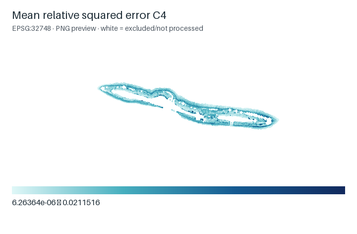
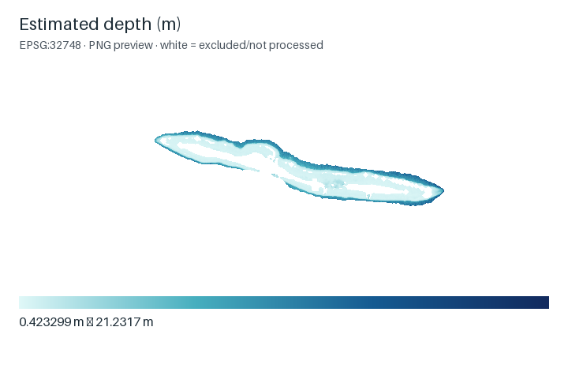
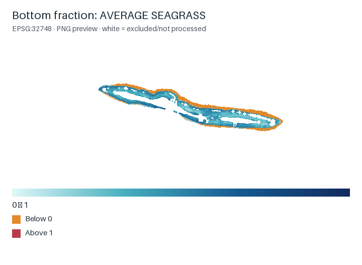
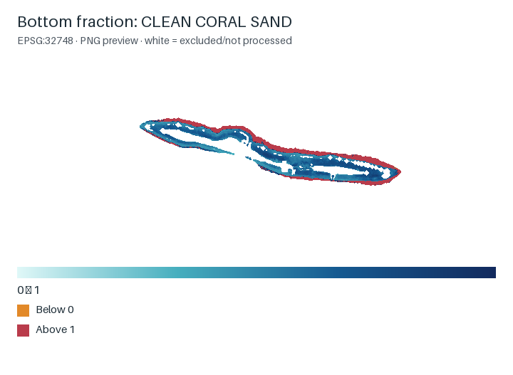
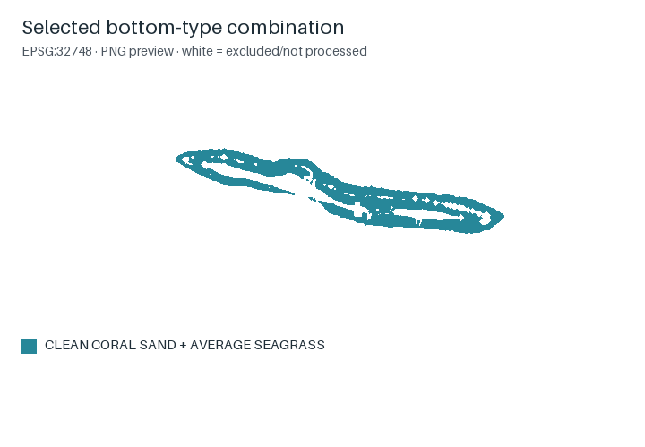
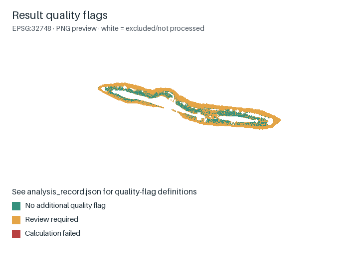
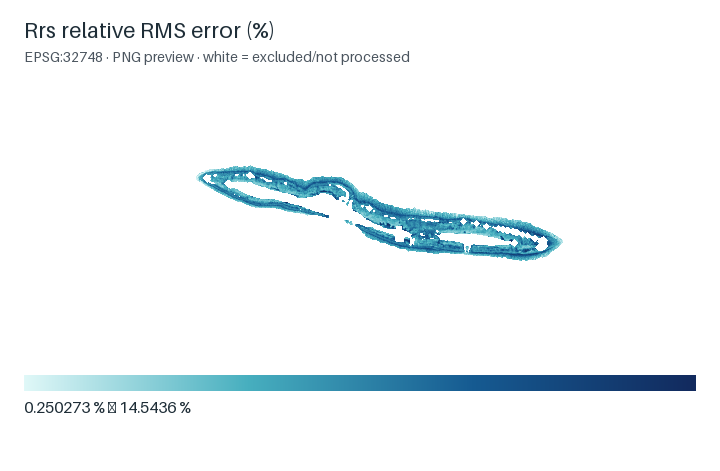
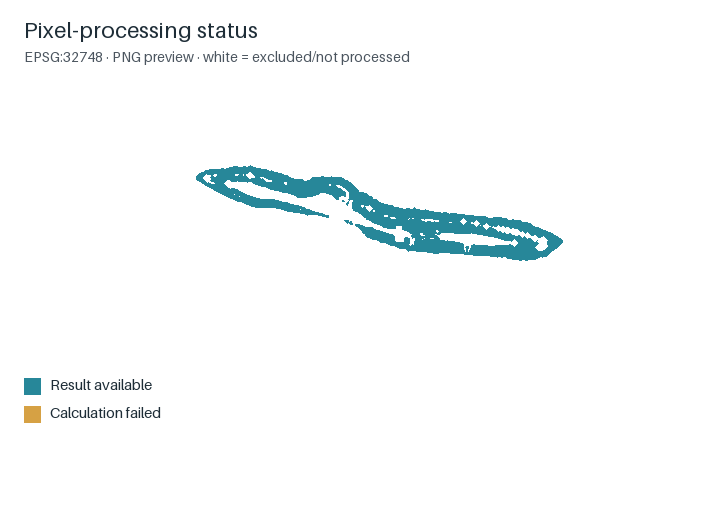

| Status | Completed |
|---|---|
| Processed pixels | 9706 |
| Failed calculations | 0 |
| Pixels with fractions outside range | 2572 |
| Pixels reaching evaluation limit | 0 |
| Sensor | Sentinel2 |
| Water type | case1 |
| Coefficients | Case 1 water · precomputed wavelength-specific coefficients (303 conditions) |







